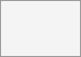

New in version 6.0:
Finding a meeting time for a group of participants can be challenging. As of Calendar v6, a new feature was introduced that allows users to create proposals for meeting times. This means that instead of just booking a time, or searching for a available time in the free busy view, participants can vote on a set of proposed times for a meeting. The organizer can then review the participants' preferences and choose the most suitable time for the meeting.

The proposal list in the left sidebar shows all the proposals that the user has created. The list shows the title of the proposal, the number of responded participants and a status of whether all participants have responded.
The user can click on the three dot menu next to a proposal item to edit, delete or view an existing proposal.
To create a new proposal a user can click on the plus icon next to the "Meeting Proposals" header at the top of the proposal list. This will open a modal where the user can enter all the relevant details for the proposed meeting.
The proposal editor has some basic fields that are similar to the event editor, such as title, description, location, duration and participants selection, that the user can fill out. These details are then used to inform the participants about the proposed meeting and times.
The key difference is the "Proposed times" selection, where the user can select multiple time slots for a meeting. The user can add as many time slots as they want, and each time slot can be edited or removed as needed.
Once the user has filled out all the required details, title, duration, participants and selected the proposed times, they can click the "Create" button to create the proposal. This will save the proposal and send notifications to all the selected participants.
A user can edit an existing proposal by clicking on the three dot menu next to a proposal item in the proposal list and selecting "Edit". This will open the same modal as when creating a new proposal, but with all the existing details filled out.
After making any necessary changes, the user can click the "Update" button to save the changes. This will also send notifications to all the participants about the updated proposal.
Users can view the progress of a proposal by clicking on the proposal item in the proposal list or clicking "View" in the three dot menu. This will open a detailed view of the proposal, with all details and a times and participants matrix, showing all the proposed times and participants' responses.
In this view, the user can see which participants have responded to the proposal and their preferences for each proposed time. The user can also see the total number of votes for each proposed time, which can help them decide on the best time for the meeting.
Once the user has reviewed the participants' responses, they can select the most popular time for the meeting by clicking on the "Create" button at the end of the date/participant matrix. This will create a new event in the user's calendar and send notifications to all participants about the confirmed meeting time.
When a new proposal is created
When a proposal is updated
When a proposal is deleted
When the final meeting time is confirmed
These notifications help all participants stay informed and engaged throughout the proposal process.
The notification emails contain the basic details for the proposed meeting, like title, description, location, duration, and proposed times. They also include a link to the response page, where participants can see all the details and respond to the proposed times.
Participants can respond to a proposed meeting by clicking on the link in the notification email. This will open the detailed view of the proposed meeting, where they can see all the proposed times, other participants' and their responses, and select their availability/preferences for each proposed time.
Participants can select their availability for each proposed time by selecting their preference on the corresponding line in the times and participants matrix. They can choose from three options: "Yes", "No", or "Maybe". Once they have made their selections, they can click the "Submit" button to save their responses.